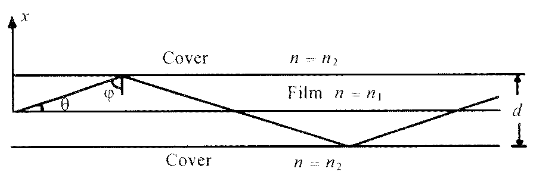

Today, single mode fibers are extensively used in optical communication systems. In single mode fibers, ray optics is not applicable at all and one has to solve Maxwell's equations to determine the modes of waveguides.
Thus, the first thing to do would be to understand the concept of modes. In order to understand the concept of modes, it is probably best to consider the simplest planar optical waveguide that consists of a thin dielectric film sandwiched between material of slighly lower refractive indices and is characterized by the following refractive index variation.
\[ n(x)= \begin{cases} n_1, & |x| < \dfrac{d}{2} \\[6pt] n_2, & |x| > \dfrac{d}{2} \end{cases} \tag{5.1} \]Equation (5.1) describes what is usually referred to as a step-index profile.

To start with, we will first consider a more general case of the refractive index depending only on the \(x\) coordinate:
\[ n^2 = n^2(x) \]When the refractive index variation depends only on the \(x\) coordinate, we can always chose the \(z\)-axis along the direction of propagation of the wave and we may, without any loss of generality, write the solutions of Maxwell's equations in the form:
\[ \mathcal{E} = \vec{E}(x,y)\, e^{i(\omega t - \beta z)} \] \[ \mathcal{H} = \vec{H}(x,y)\, e^{i(\omega t - \beta z)} \]The above equations define the modes of the system. Thus,
Modes represent transverse field distribution that suffer only a phase change as they propagate through the waveguide along \(z\).Two complementary pictures:
One description is exact and field-based. The other is approximate and geometric.
A guided mode is a field pattern that:
When the wavelength is much smaller than the guide thickness: